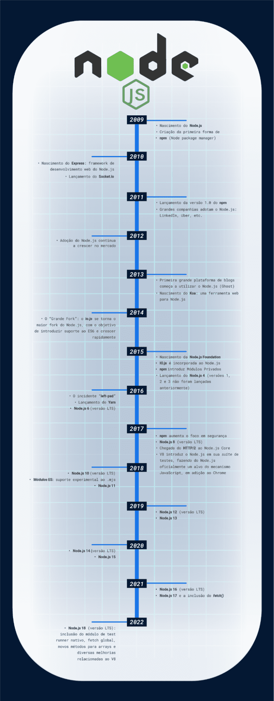
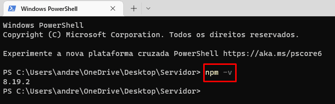

Saiba o que é Node.js, um software gratuito e de código aberto que permite executar código JavaScript do lado do
servidor.
É importante que o leitor saiba sobre JavaScript, pois o Node.js executa o código Javascript. Portanto, se você
não sabe o que é JavaScript recomendo essa leitura antes de
prosseguir.
Node.js é um interpretador de código JavaScript com o código aberto, focado em migrar o Javascript do lado do
cliente para servidores. O Node.js usa um modelo de E/S (entrada e saída) direcionada a evento não bloqueante
que o torna
leve e eficiente, ideal para aplicações em tempo real com troca intensa de dados através de dispositivos
distribuídos. Isso significa que as
operações de entrada e saída (ex: acesso a banco de dados e leitura de arquivos do sistema) são assíncronas e
não bloqueiam a thread. Diferentemente dos servidores tradicionais, a thread não fica esperando que essas
operações sejam concluídas para continuar sua execução.
O ambiente de tempo de execução chamado Node.js inclui tudo de que você precisa para executar um programa
escrito em JavaScript. Ele também é um ambiente de desenvolvimento que permite utilizar JavaScript para
desenvolver aplicações de rede rápidas e escaláveis. Isso significa que o Node.js é capaz de
executar um programa JavaScript fora de um navegador.
O Node.js é um ambiente de tempo de execução do JavaScript. Certo, mas o que isso quer dizer? Como é que ele
funciona?
O Node.js é executado em cima do interpretador JavaScript V8, o motor de JavaScript open source do Google
Chrome. O Node.js tem um modelo de I/O ("I/O" se refere, principalmente, à interação com o disco do sistema e a
rede suportada pela libuv.) direcionada a evento não bloqueante que o torna leve e eficiente. O
ecossistema de pacotes do Node.js, o npm, é o maior ecossistema de bibliotecas de código aberto do mundo.
Apesar de recente, o Node.js já é utilizado por grandes empresas no mercado de tecnologia, como Netflix, Uber e
LinkedIn. O Node.js é uma tecnologia que está em constante evolução e crescimento, e que tem um futuro
promissor.
O JavaScript foi criado para facilitar o desenvolvimento de sites mais interativos e dinâmicos, como uma
linguagem de programação de alto nível que roda nos navegadores. Com a evolução da web, outras utilidades foram
criadas para a linguagem. Uma delas é o Node.js
História do Node.js
O Node.js foi criado em 2009 por Ryan Dahl, um engenheiro de software americano, que trabalhava na Joyent, uma
empresa de computação em nuvem. Dahl estava trabalhando em um projeto de rede em tempo real com o Google Chrome
e ficou frustrado com a falta de eficiência do Apache HTTP Server para lidar com um grande número de conexões
simultâneas. Ele então decidiu criar um novo sistema que pudesse lidar com milhares de conexões simultâneas com
baixo consumo de recursos. O resultado foi o Node.js, que foi escrito em C, C++ e JavaScript.

Como o Node.JS funciona?
A principal característica do Node.js é sua execução ser single-thread, ou seja, os recursos computacionais são
alocados apenas uma vez pelo tempo que a aplicação estiver sendo executada. Aplicações multi-thread, como as
criadas com PHP, por exemplo, requerem a criação de uma thread a cada nova requisição, e ela não é executada
enquanto a anterior não for finalizada.
Essa thread única é chamada de “Event Loop”. Ela trata todas as requisições como eventos, de maneira assíncrona
e não-bloqueável, eliminando a necessidade de filas de processamento e tornando as aplicações mais eficientes e
responsivas.
O Node.js não é um framework JavaScript, como o React ou o Vue.js, mas sim um ambiente de execução em uma
máquina virtual própria para interpretar e executar os scripts de forma autônoma, baseada no “motor” V8, criado
pelo Google para o navegador Chrome.
Assíncrono, single thread e orientado a eventos
Uma das características do Node.js é ser um ambiente de execução assíncrono. Com isso, ele trabalha de forma
a não bloquear a aplicação no momento de sua execução, colocando os processos mais demorados para um segundo
plano.
O Node.js se diferencia de outras plataformas consagradas de programação, como o Java, PHP e .NET, pelo fato
de ser single thread, ou seja, o Node.js não inicia threads em paralelo como outras plataformas. Por se
tratar de um sistema single thread, o Node.js não tem a necessidade do gerenciamento de múltiplas threads,
otimizando, assim, o processo e o consumo de memória da aplicação.
A característica do Node.js que faz com ele não seja lento ou demore a processar a fila de requisição é ser
não bloqueante; isso tem a ver com o sistema de callbacks do JavaScript e o loop de eventos.
Vantagens do Node.js
O Node.js é uma plataforma que tem como principal característica a execução de códigos JavaScript no
servidor. Com isso, o Node.js permite que o desenvolvedor crie aplicações web escaláveis e de alta
performance utilizando apenas uma linguagem de programação.
Características do Node.JS
Já falamos de algumas características do Node.js, mas vale ressaltar que ele pode
ser usado para:
Desenvolver soluções em API Rest;
Criação de chatbots;
Projetos de internet das coisas (IoT); e
Dar vida a soluções de web scraping, web servers e até mesmo aplicações desktop.
O Node.js possui uma versatilidade gigantesca. Veja algumas outras características que não podemos deixar de
comentar:
Escalabilidade: o Node.js foi pensando desde o ínicio para entregar soluções para arquiteturas
escaláveis, por isso sua adoção por grandes empresas de tecnologias;
Multiplataforma: podemos criar desde soluções web a aplicações desktop;
Velocidade: o Node.js é muito rápido, pois utiliza o motor V8 do Google Chrome para interpretar o
JavaScript;
Comunidade: o Node.js possui uma comunidade muito ativa, o que nos permite encontrar soluções para
problemas comuns;
NPM: o Node Package Manager é um gerenciador de pacotes que nos permite instalar bibliotecas e
frameworks de forma simples e rápida;
Código aberto: o Node.js é um projeto open source, o que nos permite contribuir com o projeto e até
mesmo realizar customizações;
Multi-paradigma: com o JavaScript podemos adotar várias formas de codificar usando paradigmas como a
orientação a objetos, o funcional e o orientado a eventos.
Para se trabalhar com o Node.js é preciso conhecer as bases do JavaScript, que é uma linguagem com
grande receptividade, principalmente para os iniciantes, pois possui uma curva de aprendizagem mais
suave em comparação a outras linguagens.
Módulos do Node.js
O Node.js trabalha fortemente com o conceito de módulo, que visa organizar o código em partes pequenas e
especializadas, além de aplicar o princípio de encapsulamento ao “esconder” o código e expor somente o
necessário a outras partes da aplicação.
Originalmente o Node.js trabalhava com o sistema CJS (Common JS) de modularização, pois o JavaScript não
tinha ferramentas específicas para isso. Posteriormente foi especificado o padrão “geral” de módulos do
JavaScript, o EcmaScript Modules.
O Node.js vem adotando gradativamente o ECMAScript Modules desde a versão 13, o que traz muitas
diferenças com relação à forma “original” do Node.js, o CJS. Por isso, é importante conhecer as
diferenças entre os dois padrões de módulos.
O que é o npm?
O npm é o gerenciador de pacotes do Node.js. Ele é um repositório online para publicação de projetos de
código
aberto para Node.js, e um utilitário de linha de comando para instalação, além de gerenciamento de
dependências
de projetos Node.js.
O npm é composto por um cliente de linha de comando e um banco de dados online de pacotes públicos e
privados,
chamado de registro npm. O registro é acessado via cliente e a linha de comando interage com o registro por
meio
de APIs RESTful. O cliente de linha de comando interage com o usuário e o registro por meio de chamadas de
procedimento remoto (RPC).
Ele é escrito em JavaScript, tornando-o compatível com qualquer ambiente que suporte o Node.js. O npm é
distribuído com o Node.js, o que significa que quando você baixa o Node.js, o npm é instalado
automaticamente no
seu computador.
Usando o NPM
No processo de instalação do Node.js nos é entregue também o NPM (Node Package Manager), que vai nos
permitir compartilhar os módulos que criamos com a comunidade além de possibilitar a reutilização de módulos
criados por outras pessoas desenvolvedoras.
Para verificar a instalação e versão do NPM você pode executar o comando npm -v:

Através do NPM podemos gerenciar todas dependências dos projetos JavaScript que estamos desenvolvendo, com
ele temos acesso a uma gama enorme de bibliotecas e frameworks JS, e possibilita também a criarmos nossos
próprios módulos e compartilhar com a comunidade. Para isso, basta acessar o site do NPM e criar uma conta
gratuita.